Makubetsu
Makubetsu · Hokkaido
Makubetsu
Highlighted on the Hokkaido map.
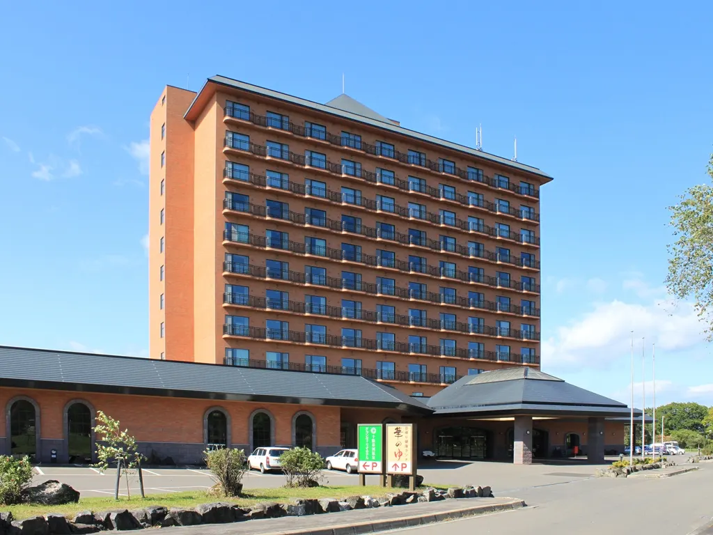
Stay
幕別温泉パークホテル悠湯館
Makubetsu Onsen Paakuhoteru Yuu Yu Kan
十勝幕別天然温泉 十勝幕別温泉 グランヴィリオホテル
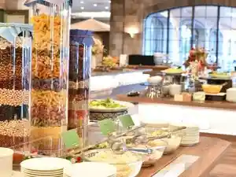
Tokachi Makubetsu Tennen Onsen Tokachi Makubetsu Onsen Guranviriohoteru
ビジネスホテルアルムもみの木帯広東
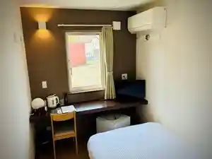
Bijinesuhoteruarumu Momino Ki Obihiro Higashi
Dining
たかこ
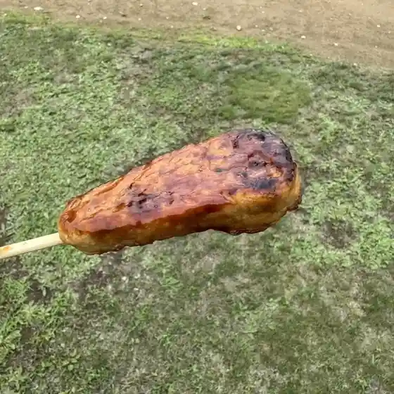
Takako
セブン-イレブン 幕別町札内暁店
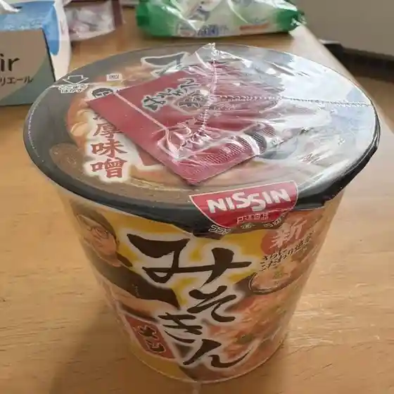
Sebun - Irebun Makubetsu Machi Satsunai Akatsuki Mise
十勝大福本舗 幕別店
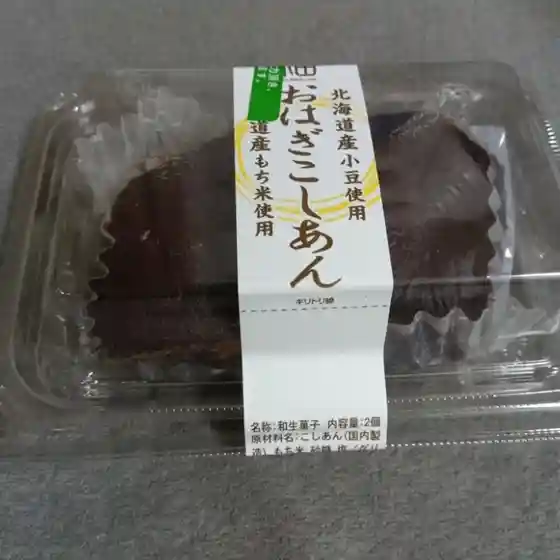
Tokachi Daifuku Honpo Makubetsu Mise
山眠る 菓子とガレット
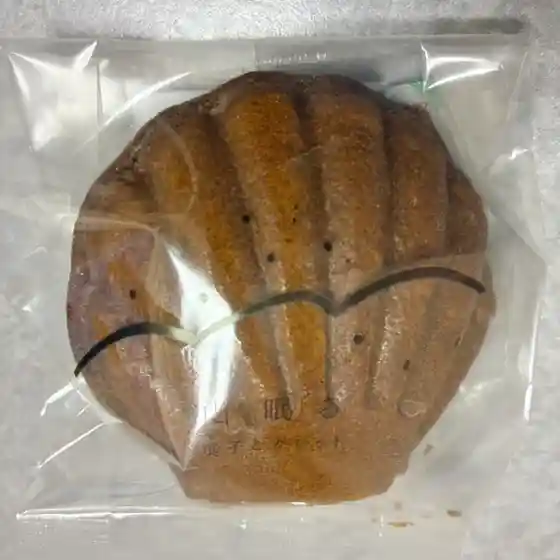
Yama Nemuru Kashi To Garetto
からあげハウス 千住店
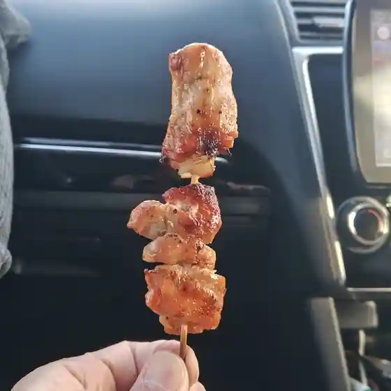
Karaage Hausu Senju Mise
花茶屋
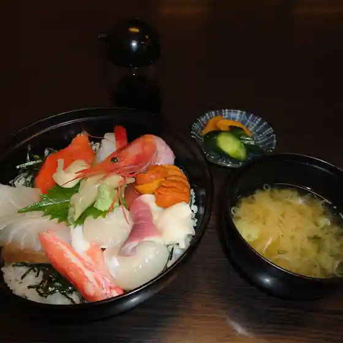
Hanacha Ya
希林亭
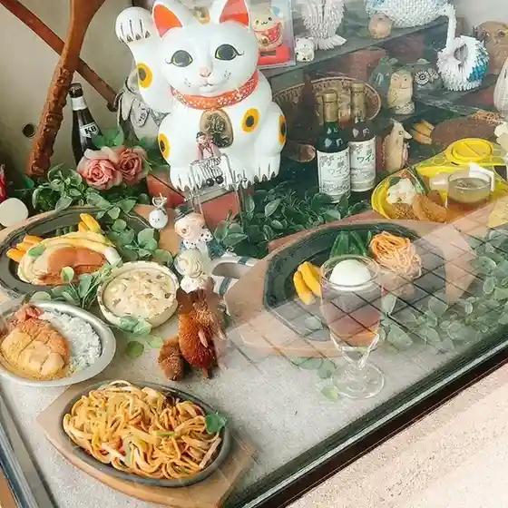
Kirin Tei
カフェ シェモア
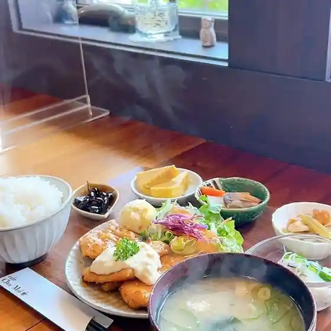
Kafe Shiemoa
竹葉寿司
Chikuha Sushi
レフボン 札内店
Refubon Satsunai Mise
クランベリー 札内店
Kuranberii Satsunai Mise
ななかまど
Nanakamado
唐草屋
Karakusa Ya
ビストロ ブラウン
Bisutoro Buraun
ナルセ養蜂場
Naruse Youhou Ba
セイコーマート 幕別本町店
Seikoomaato Makubetsu Honchou Mise
ひこいち
Hikoichi
EN Photostudio&ART Gallery Cafe
En Photostudio&Art Gallery Cafe
道SHOKU 十勝本店
Michi Shoku Tokachi Honten
かふぇ ぬかない
Kafe Nukanai
島菓子舗
Shima Kashi Ho
Ano屋ン家
Ano Ya N Ie
ホテルアルコ236
Hoteruaruko 236
まくべつ いちご園
Makubetsu Ichigo Sono